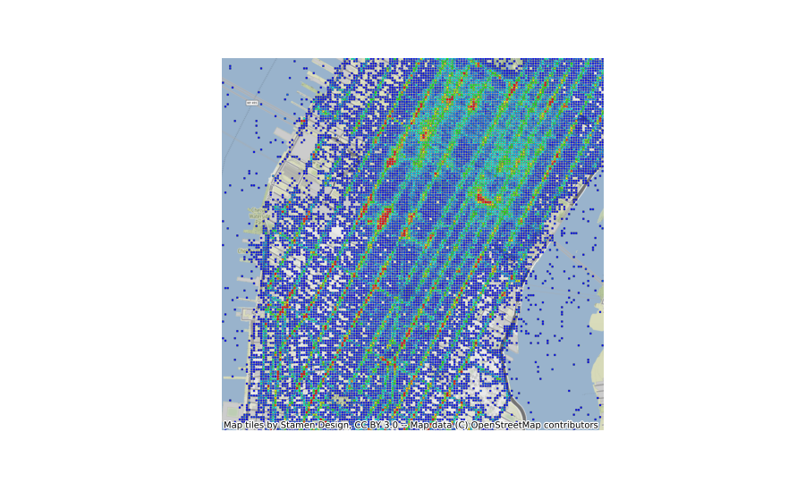

arctern.plot.fishnetmap¶
-
arctern.plot.fishnetmap(ax, points, weights, bounding_box, color_gradient=['#0000FF', '#FF0000'], cell_size=4, cell_spacing=1, opacity=1.0, coordinate_system='epsg:3857', aggregation_type='sum', **extra_contextily_params)[source]¶ Plots a fishnet map in Matplotlib.
- Parameters
ax (matplotlib.axes.Axes) -- Axes where geometries will be plotted.
points (GeoSeries) -- Sequence of points.
weights (Series) -- Color weights of polygons.
bounding_box (list) -- Bounding box of the map. For example, [west, south, east, north].
color_gradient (list, optional) -- Range of color gradient, by default ["#0000FF", "#FF0000"]. Either use ["hex_color"] to specify a same color for all geometries, or ["hex_color1", "hex_color2"] to specify a color gradient ranging from "hex_color1" to "hex_color2".
cell_size (int, optional) -- Side length of fishnet cells, by default 4.
cell_spacing (int, optional) -- Margin between adjacent fishnet cells, by default 1.
opacity (float, optional) -- Opacity of the fishnet, ranged from 0.0 to 1.0, by default 1.0.
coordinate_system (str, optional) -- The Coordinate Reference System (CRS) set to all geometries, by default 'EPSG:3857'. Only supports SRID as a WKT representation of CRS by now.
aggregation_type (str, optional) -- Aggregation type, by default 'sum'.
**extra_contextily_params (dict) -- Extra parameters passed to contextily.add_basemap.
Examples
>>> import pandas as pd >>> import numpy as np >>> import arctern >>> import matplotlib.pyplot as plt >>> >>> # Read from test_data.csv >>> # Download link: https://raw.githubusercontent.com/arctern-io/arctern-resources/benchmarks/benchmarks/dataset/layer_rendering_test_data/test_data.csv >>> # Uncomment the lines below to download the test data >>> # import os >>> # os.system('wget "https://raw.githubusercontent.com/arctern-io/arctern-resources/benchmarks/benchmarks/dataset/layer_rendering_test_data/test_data.csv"') >>> df = pd.read_csv(filepath_or_buffer="test_data.csv", dtype={'longitude':np.float64, 'latitude':np.float64, 'color_weights':np.float64, 'size_weights':np.float64, 'region_boundaries':np.object}) >>> points = arctern.GeoSeries.point(df['longitude'], df['latitude']) >>> >>> # render fishnet >>> fig, ax = plt.subplots(figsize=(10, 6), dpi=200) >>> arctern.plot.fishnetmap(ax, points=points, weights=df['color_weights'], bounding_box=[-74.01424568752932, 40.72759334104623, -73.96056823889673, 40.76721122683304], cell_size=8, cell_spacing=2, opacity=1.0, coordinate_system="EPSG:4326") >>> plt.show()
